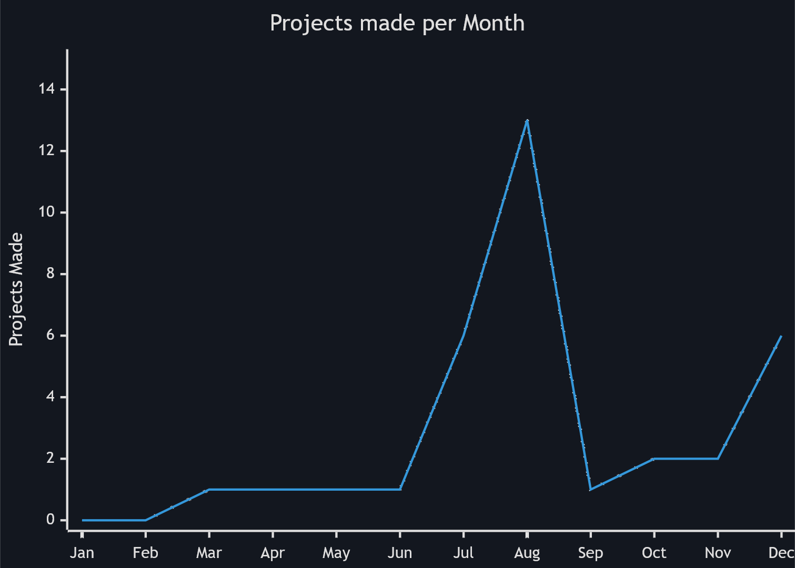

Merry Christmas!
And a Happy New Year!
A website celebrating the end of the year, and the progress I made during it.
Things I accomplished this year
- March
- April
- May
- June
- July
- August
- Grup
- fisiks 3
- Minecraft Profile Manager
- Sweather
- Simple Rhythm Game
- Fishing Game
- Connect Four Multiplayer
- Car Physics Engine
- Four. Million. Mushrooms.
- Gemini Chatbot
- Physics Pacman
- Vapour
- Godiscord (Failed)
- September
- October
- November
- December
Trends
There are some thing I noticed from the projects I have this year, here are some of the most interesting observations.
- I like arcade games
- Even though we live in a time where computers can process billions of triangles in the blink of an eye, I often make games based on games that were made everyone had a computer in their pocket. The best example of this is the tetr.lang series, where I remade Tetris in various languages, ranging from Rust, to Go, and Godot. There are other projects, such as Physics Pacman, that also show this point.
- Hack Club is a big contributer in why I program
-
Observe the following graph:

As you can see, there are two spikes during the months of August and December, with the December spike being smaller, and all other months being relatively empty. I also had zero projects at the beginning of the year. The spike in August can be explained with Hack Club Arcade, a system where you could make projects to earn real rewards. I needed a laptop for the upcoming high school years, so I had to make a lot of project to earn it. The December spike can be explained with Hack Club High Seas, a different event, with a similar premise. As I'm writing this, the event is currently ongoing, so in reality the December spike would be as big as the August spike when the year ends. - I learned more over time
- This one sounds obvious, but at the beggining of the year I used a LOT of Godot, for almost everything. An exmapel of this is Grup, a CLI that searchs files for a pattern, but made entirely in Godot. As time went on, I learnt more languages, such as Rust, Kotlin, and Go, and I became more low-level. Most of the later projects have their own drawing APIs for different components, and everything is handled by me.
The Future
I love progamming, and I'll probably do a lot of it in 2025, probably an unhealthy amount. I also want to participate in more Hack Club events, like game jams and Hackathons. In face, I'm planning to host Hack Club Scrapyard in Calgary on March 15-16, along with some of my friends.